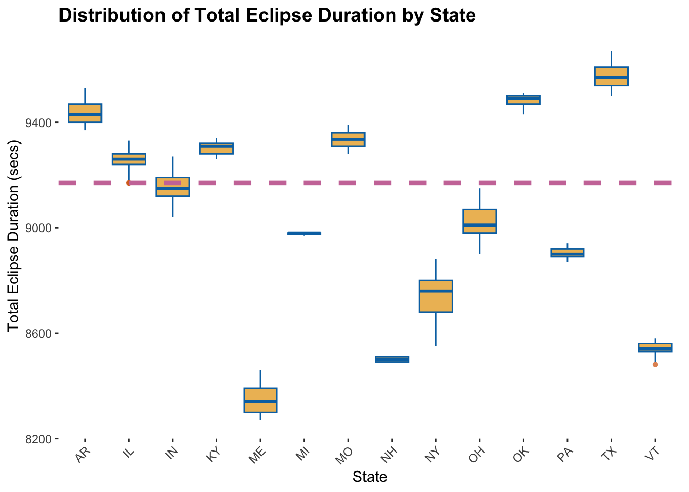
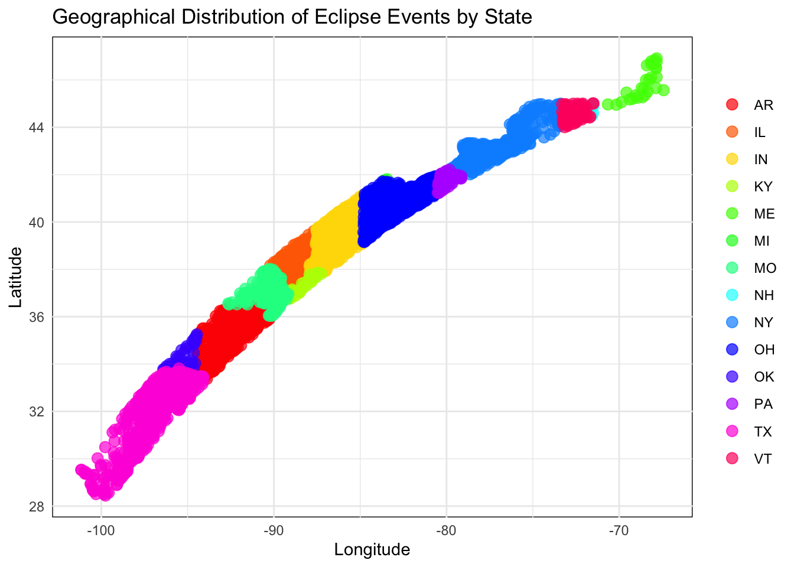
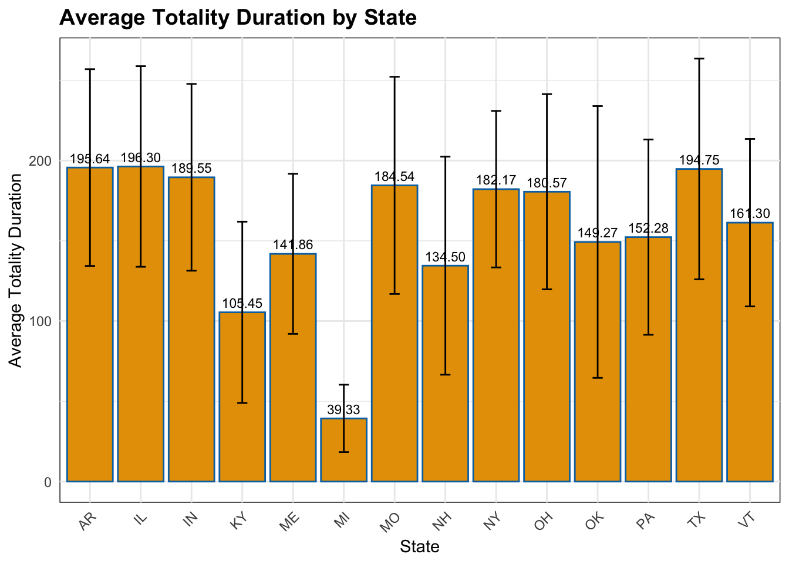
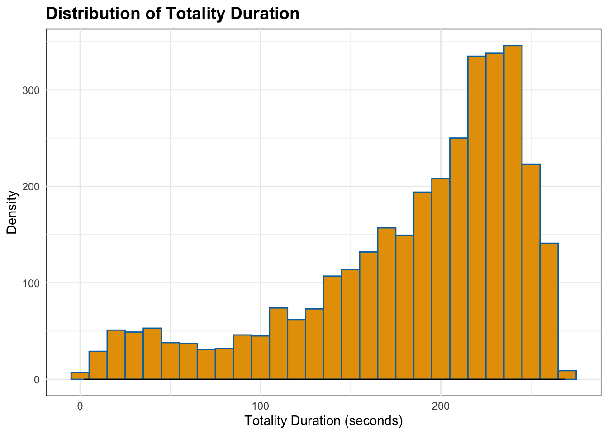
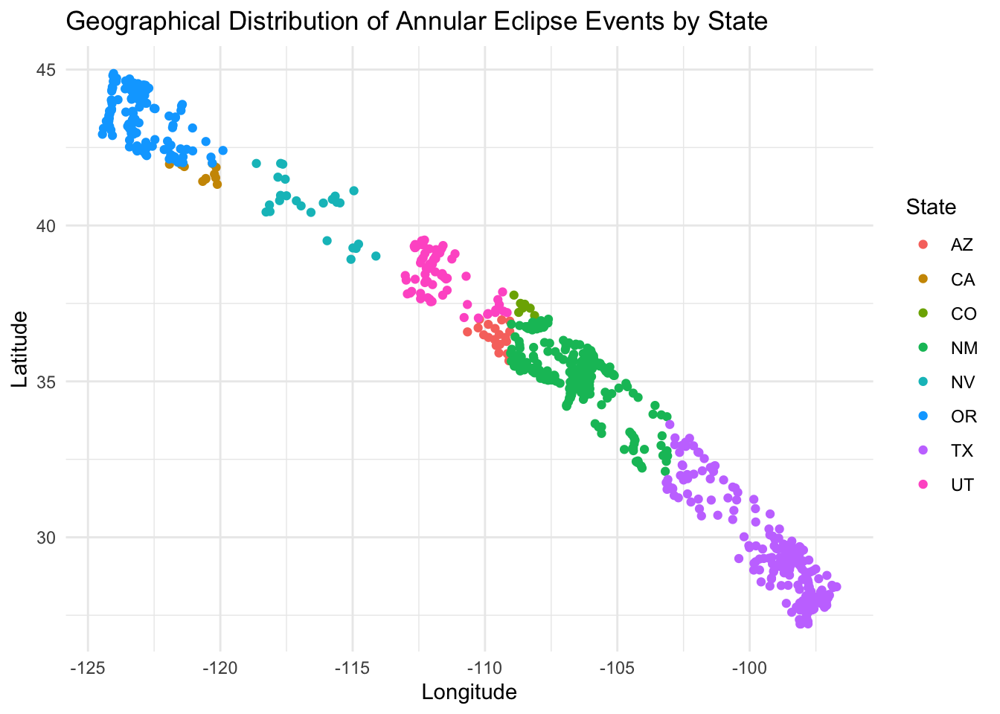
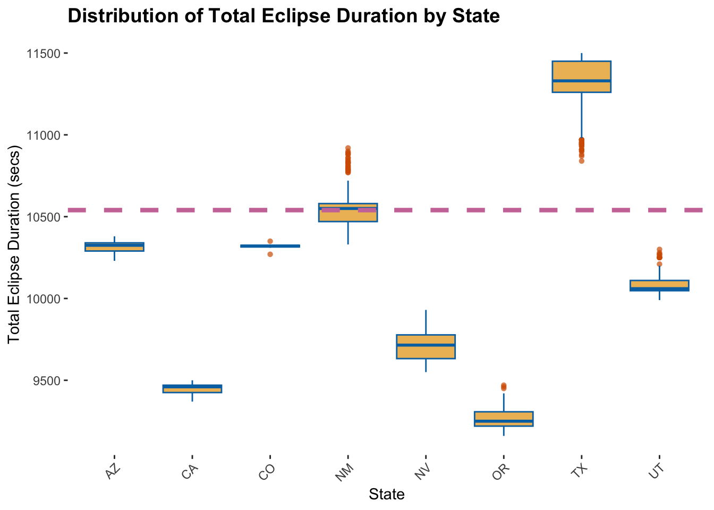
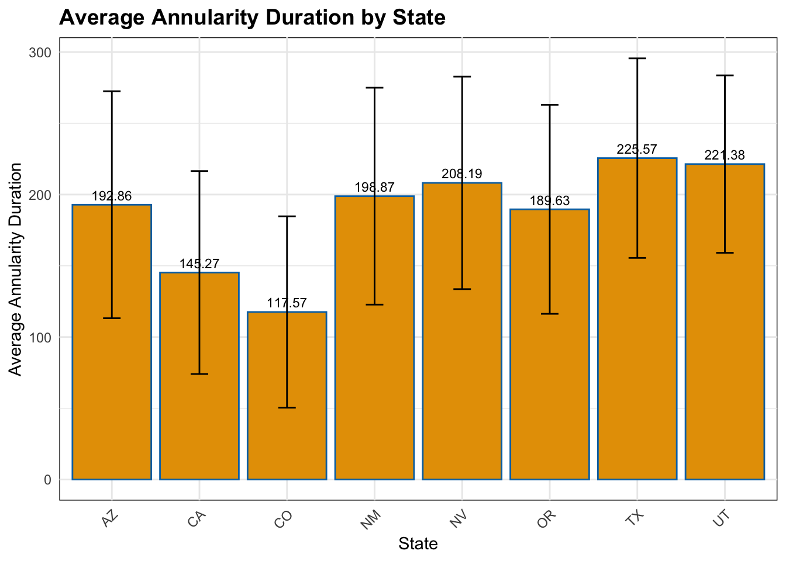
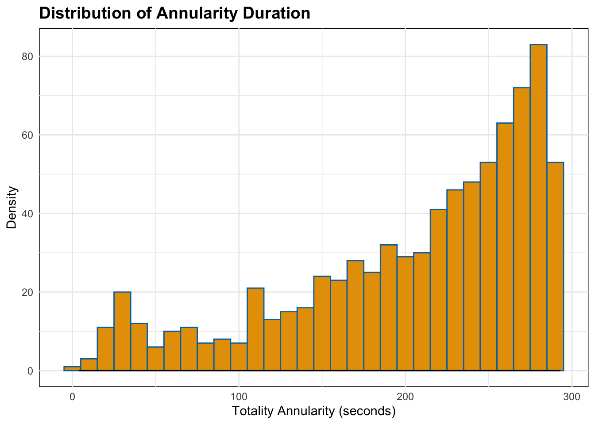
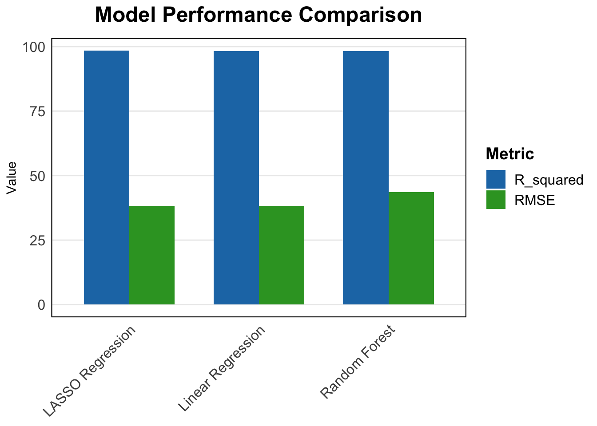

library(tidyverse)
library(ggplot2)
library(dplyr)
library(corrplot)
library(gt)
library(tidymodels)
library(geosphere)
library(yardstick)
library(caret)
library(glmnet)Tidy Tuesday Exercise
Tidy Tuesday Exercise
Loading the Data and Required Packages
The data sets were accessed from the following GitHub repository,
eclipse_total_2024 <- read.csv("~/Desktop/BIOS8060E/emmahardinparker-MADA-portfolio/data/eclipse_total_2024.csv")
eclipse_annular_2023 <- read.csv("~/Desktop/BIOS8060E/emmahardinparker-MADA-portfolio/data/eclipse_annular_2023.csv")Background
The ultimate goal is to perform EDA processes on both the eclipse_total_2024 and eclipse_annular_2023 datasets in hopes to formulate questions and hypotheses to drive machine learning and modeling analysis. I am using the EDA process for both datasets to help me determine which dataset I would like to focus on for the main machine learning model analysis.
Exploratory Data Analysis of Eclipse_Total_2024 dataset
The data dictionary for the eclipse_total_2024 dataset is as follows:
state: character 2-letter state abbreviation name: character city name lat: double latitude lon: double longitude eclipse_1: hms time at which the moon first contacts the sun in this location eclipse_2: hms time at which the eclipse is at 50% in this location eclipse_3: hms time at which totality begins in this location eclipse_4: hms time at which totality ends in this location eclipse_5: hms time at which the eclipse is back to 50% in this location eclipse_6: hms time at which the moon last contacts the sun in this location
EDA of 2024 Totality Dataset
I am going to create some exploratory tables and figures to get a better grip on the data before doing any further analysis.
str(eclipse_total_2024)'data.frame': 3330 obs. of 10 variables:
$ state : chr "AR" "AR" "AR" "AR" ...
$ name : chr "Acorn" "Adona" "Alexander" "Alicia" ...
$ lat : num 34.6 35 34.6 35.9 35.4 ...
$ lon : num -94.2 -92.9 -92.5 -91.1 -93.7 ...
$ eclipse_1: chr "17:30:40" "17:33:20" "17:33:20" "17:37:30" ...
$ eclipse_2: chr "18:15:50" "18:18:30" "18:18:30" "18:22:40" ...
$ eclipse_3: chr "18:47:35" "18:50:08" "18:51:09" "18:54:29" ...
$ eclipse_4: chr "18:51:37" "18:54:22" "18:53:38" "18:58:05" ...
$ eclipse_5: chr "19:23:40" "19:26:10" "19:26:20" "19:29:50" ...
$ eclipse_6: chr "20:08:30" "20:10:50" "20:11:10" "20:14:10" ...summary(eclipse_total_2024) state name lat lon
Length:3330 Length:3330 Min. :28.45 Min. :-101.16
Class :character Class :character 1st Qu.:35.42 1st Qu.: -92.41
Mode :character Mode :character Median :39.24 Median : -86.56
Mean :38.33 Mean : -86.93
3rd Qu.:41.22 3rd Qu.: -82.31
Max. :46.91 Max. : -67.43
eclipse_1 eclipse_2 eclipse_3 eclipse_4
Length:3330 Length:3330 Length:3330 Length:3330
Class :character Class :character Class :character Class :character
Mode :character Mode :character Mode :character Mode :character
eclipse_5 eclipse_6
Length:3330 Length:3330
Class :character Class :character
Mode :character Mode :character
sum(is.na(eclipse_total_2024)) # No missing values [1] 0Fortunately, there are no missing values so I can move on to more in-depth mutation of the data. This involves creating new varia les and mutating existing variables to make sure the data are prepared to be analyzed. I am also going to create a boxplot showing the total eclipse duration by state.
# Convert hms columns to time format
eclipse_total_2024 <- eclipse_total_2024 %>%
mutate(
eclipse_1_time = as.POSIXct(eclipse_1, format = "%H:%M:%S"),
eclipse_2_time = as.POSIXct(eclipse_2, format = "%H:%M:%S"),
eclipse_3_time = as.POSIXct(eclipse_3, format = "%H:%M:%S"),
eclipse_4_time = as.POSIXct(eclipse_4, format = "%H:%M:%S"),
eclipse_5_time = as.POSIXct(eclipse_5, format = "%H:%M:%S"),
eclipse_6_time = as.POSIXct(eclipse_6, format = "%H:%M:%S")
)
# Calculate duration of totality
eclipse_total_2024 <- eclipse_total_2024 %>%
mutate(
totality_duration = difftime(eclipse_4_time, eclipse_3_time, units = "secs")
)
# Calculate total eclipse duration
eclipse_total_2024 <- eclipse_total_2024 %>%
mutate(
total_eclipse_duration = difftime(eclipse_6_time, eclipse_1_time, units = "secs")
)
# Summary statistics for new variables
summary(eclipse_total_2024$totality_duration) Length Class Mode
3330 difftime numeric summary(eclipse_total_2024$total_eclipse_duration) Length Class Mode
3330 difftime numeric # Custom color palette
my_colors <- c("#77AADD", "#99DDFF", "#44BB99", "#BBCC33", "#AAAA00")
# Visualize eclipse duration
ec_dur <- ggplot(eclipse_total_2024, aes(x = state, y = total_eclipse_duration)) +
geom_boxplot(
fill = "#E69F00", color = "#0072B2",
alpha = 0.7,
outlier.color = "#D55E00",
outlier.shape = 16
) +
geom_hline(yintercept = median(eclipse_total_2024$total_eclipse_duration),
color = "#CC79A7", linetype = "dashed", linewidth = 1.5)+
labs(x = "State", y = "Total Eclipse Duration (secs)", title = "Distribution of Total Eclipse Duration by State") +
theme(
axis.text.x = element_text(angle = 45, hjust = 1),
panel.background = element_rect(fill = "white"),
plot.title = element_text(size = 14, face = "bold"),
legend.position = "none"
)
ec_durDon't know how to automatically pick scale for object of type <difftime>.
Defaulting to continuous.
From this plot we can see that Texas, Oklahoma, Missouri, and Arkansas have the highest total eclipse duration. This is to be expected given the geographic “line” these states follow and the prediction of the line of totality.
Given that longitude and latitude aren’t commonly used as measurements in everyday life, I want to explore the distribution of states by longitude and latitude in comparison to eclipse events.
# Determine the unique states in your dataset
unique_states <- unique(eclipse_total_2024$state)
# Create a custom color palette based on the number of unique states
state_colors <- rainbow(length(unique_states))
# Create the geographical scatter plot with the updated color palette
geo_dis <- ggplot(eclipse_total_2024, aes(x = lon, y = lat, color = state)) +
geom_point(alpha = 0.7, size = 3) + # Adjust transparency and point size
scale_color_manual(values = setNames(state_colors, unique_states)) + # Custom color palette for states
labs(title = "Geographical Distribution of Eclipse Events by State",
x = "Longitude", y = "Latitude", color = "State") +
theme_minimal() + # Minimalist theme
theme(
legend.title = element_blank(), # Remove legend title
panel.background = element_rect(fill = "white"), # White background
legend.position = "right" # Position legend on the right side
)
geo_dis
This plot was created merely so I could understand where each state roughly lies on the longitude and latitude scale and to see how eclipse events travel across geographic coordinates.
I am now going to move on and create a summary table of the average duration of totality by state.
# Create a summary table with mean totality duration by state
summary_table <- eclipse_total_2024 %>%
group_by(state) %>%
summarize(mean_duration = mean(totality_duration))
# Create the gt table
sum_table <- summary_table %>%
gt() %>%
tab_header(
title = "Summary Statistics of Totality Duration by State",
subtitle = "Data from Eclipse Events"
) %>%
fmt_number(
columns = c("mean_duration"),
decimals = 2
) %>%
tab_style(
style = list(
cell_text(weight = "bold"),
cell_borders(sides = "all", color = "black")
),
locations = cells_column_labels()
) %>%
tab_style(
style = list(
cell_text(size = px(10)),
cell_borders(sides = "all", color = "gray")
),
locations = cells_body()
)
sum_table| Summary Statistics of Totality Duration by State | |
|---|---|
| Data from Eclipse Events | |
| state | mean_duration |
| AR | 195.638356164384 |
| IL | 196.301587301587 |
| IN | 189.551194539249 |
| KY | 105.447368421053 |
| ME | 141.857142857143 |
| MI | 39.3333333333333 |
| MO | 184.535714285714 |
| NH | 134.5 |
| NY | 182.168734491315 |
| OH | 180.5670995671 |
| OK | 149.268292682927 |
| PA | 152.281690140845 |
| TX | 194.746192893401 |
| VT | 161.298850574713 |
Illinois and Texas appear to have the highest totality duration out of all states. I am now going to switch gears and create a plot to show the totality duration across different states.
tot_state <- ggplot(eclipse_total_2024, aes(x = state, y = totality_duration)) +
geom_bar(stat = "summary", fun = "mean", fill = "#E69F00", color = "#0072B2") +
geom_errorbar(stat = "summary", fun.min = function(x) mean(x) - sd(x),
fun.max = function(x) mean(x) + sd(x), width = 0.2) +
geom_text(stat = "summary", aes(label = sprintf("%.2f", ..y..)),
vjust = -0.5, size = 3) + # Add data labels
labs(title = "Average Totality Duration by State",
x = "State", y = "Average Totality Duration") +
scale_fill_manual(values = my_colors) +
theme_minimal() +
theme(
axis.text.x = element_text(angle = 45, hjust = 1),
panel.background = element_rect(fill = "white"),
plot.title = element_text(size = 14, face = "bold"),
)
tot_stateDon't know how to automatically pick scale for object of type <difftime>.
Defaulting to continuous.Warning: The dot-dot notation (`..y..`) was deprecated in ggplot2 3.4.0.
ℹ Please use `after_stat(y)` instead.No summary function supplied, defaulting to `mean_se()`
Here we can see exactly what we saw in the table, a distribution with exact values and error bars of the average duration of totality by state. I knew there would be some variability among these values, but Michigan had a much lower value that I was expecting.
I also want to create a density plot showing the totality duration in seconds to explore the distribution of total duration values.
dens <- ggplot(eclipse_total_2024, aes(x = totality_duration)) +
geom_histogram(binwidth = 10, fill = "#E69F00", color = "#0072B2") +
geom_density(alpha = 0.7, fill = "skyblue") +
labs(title = "Distribution of Totality Duration",
x = "Totality Duration (seconds)", y = "Density") +
scale_fill_manual(values = my_colors) + # Custom color palette
theme_minimal() + # Minimalist theme
theme(
panel.background = element_rect(fill = "white"), # White background
plot.title = element_text(size = 14, face = "bold"), # Title appearance
)
densDon't know how to automatically pick scale for object of type <difftime>.
Defaulting to continuous.
From this plot we can see that totality lasted mostly between 180 and 220 seconds. This is a good frame of reference to have moving into machine learning model analysis.
I am now going to move on to the second dataset, eclipse_annular_2023.
Exploratory Data Analysis of Eclipse_Annular_2023 dataset
The data dictionary for the eclipse_annular_2023 dataset is as follows:
state: character 2-letter state abbreviation name: character city name lat: double latitude lon: double longitude eclipse_1: hms time at which the moon first contacts the sun in this location eclipse_2: hms time at which the eclipse is at 50% in this location eclipse_3: hms time at which annularity begins in this location eclipse_4: hms time at which annularity ends in this location eclipse_5: hms time at which the eclipse is back to 50% in this location eclipse_6: hms time at which the moon last contacts the sun in this location
Similar to the process above, I want to create another plot of the distribution of eclipse events by longitude and latitude since this data set contains a few different states than the previous dataset.
# Plot geographical distribution
geo_dis_annular <- ggplot(eclipse_annular_2023, aes(x = lon, y = lat, color = state)) +
geom_point() +
labs(title = "Geographical Distribution of Annular Eclipse Events by State",
x = "Longitude", y = "Latitude", color = "State") +
theme_minimal()
# Print the plot
print(geo_dis_annular)
I am now going to create a plot showing the total eclipse duration by state. The following three figures explore the annular duration by state in different formats. This is to strengthen my visualization skills and allow for a deeper understanding of the data distribution.
# Convert hms columns to time format
eclipse_annular_2023 <- eclipse_annular_2023 %>%
mutate(
eclipse_1_time = as.POSIXct(eclipse_1, format = "%H:%M:%S"),
eclipse_2_time = as.POSIXct(eclipse_2, format = "%H:%M:%S"),
eclipse_3_time = as.POSIXct(eclipse_3, format = "%H:%M:%S"),
eclipse_4_time = as.POSIXct(eclipse_4, format = "%H:%M:%S"),
eclipse_5_time = as.POSIXct(eclipse_5, format = "%H:%M:%S"),
eclipse_6_time = as.POSIXct(eclipse_6, format = "%H:%M:%S")
)
# Calculate duration of annularity
eclipse_annular_2023 <- eclipse_annular_2023 %>%
mutate(
duration_annularity = difftime(eclipse_4_time, eclipse_3_time, units = "secs")
)
# Calculate total eclipse duration
eclipse_annular_2023 <- eclipse_annular_2023 %>%
mutate(
total_eclipse_duration = difftime(eclipse_6_time, eclipse_1_time, units = "secs")
)
# Summary statistics for new variables
summary(eclipse_annular_2023$totality_duration)Length Class Mode
0 NULL NULL summary(eclipse_annular_2023$total_eclipse_duration) Length Class Mode
811 difftime numeric # Visualize eclipse duration
ann_dur <- ggplot(eclipse_annular_2023, aes(x = state, y = total_eclipse_duration)) +
geom_boxplot(
fill = "#E69F00", color = "#0072B2",
alpha = 0.7,
outlier.color = "#D55E00",
outlier.shape = 16
) +
geom_hline(yintercept = median(eclipse_annular_2023$total_eclipse_duration),
color = "#CC79A7", linetype = "dashed", linewidth = 1.5)+
labs(x = "State", y = "Total Eclipse Duration (secs)", title = "Distribution of Total Eclipse Duration by State") +
theme(
axis.text.x = element_text(angle = 45, hjust = 1),
panel.background = element_rect(fill = "white"),
plot.title = element_text(size = 14, face = "bold"),
legend.position = "none"
)
ann_durDon't know how to automatically pick scale for object of type <difftime>.
Defaulting to continuous.
Similar to what we saw above, Texas had one of the highest durations of eclipse events, which is to be expected given the size of the state. Now, I am going to create a summary table of the average annularity duration by state.
# Create a summary table with mean annularity duration by state
annular_sum_table <- eclipse_annular_2023 %>%
group_by(state) %>%
summarize(mean_duration = mean(eclipse_annular_2023$duration_annularity))
# Create the gt table
ann_sum <- annular_sum_table %>%
gt() %>%
tab_header(
title = "Summary Statistics of Annularity Duration by State",
subtitle = "Data from Eclipse Events"
) %>%
fmt_number(
columns = c("mean_duration"),
decimals = 2
) %>%
tab_style(
style = list(
cell_text(weight = "bold"),
cell_borders(sides = "all", color = "black")
),
locations = cells_column_labels()
) %>%
tab_style(
style = list(
cell_text(size = px(10)),
cell_borders(sides = "all", color = "gray")
),
locations = cells_body()
)
ann_sum| Summary Statistics of Annularity Duration by State | |
|---|---|
| Data from Eclipse Events | |
| state | mean_duration |
| AZ | 206.028360049322 |
| CA | 206.028360049322 |
| CO | 206.028360049322 |
| NM | 206.028360049322 |
| NV | 206.028360049322 |
| OR | 206.028360049322 |
| TX | 206.028360049322 |
| UT | 206.028360049322 |
Comparing State and Annularity Duration via Histogram
ann_state <- ggplot(eclipse_annular_2023, aes(x = state, y = duration_annularity)) +
geom_bar(stat = "summary", fun = "mean", fill = "#E69F00", color = "#0072B2") +
geom_errorbar(stat = "summary", fun.min = function(x) mean(x) - sd(x),
fun.max = function(x) mean(x) + sd(x), width = 0.2) +
geom_text(stat = "summary", aes(label = sprintf("%.2f", ..y..)),
vjust = -0.5, size = 3) + # Add data labels
labs(title = "Average Annularity Duration by State",
x = "State", y = "Average Annularity Duration") +
scale_fill_manual(values = my_colors) +
theme_minimal() +
theme(
axis.text.x = element_text(angle = 45, hjust = 1),
panel.background = element_rect(fill = "white"),
plot.title = element_text(size = 14, face = "bold"),
)
ann_stateDon't know how to automatically pick scale for object of type <difftime>.
Defaulting to continuous.
No summary function supplied, defaulting to `mean_se()`
Similar to the process above, I am going to create a density plot.
ann_dens <- ggplot(eclipse_annular_2023, aes(x = duration_annularity)) +
geom_histogram(binwidth = 10, fill = "#E69F00", color = "#0072B2") +
geom_density(alpha = 0.7, fill = "skyblue") +
labs(title = "Distribution of Annularity Duration",
x = "Totality Annularity (seconds)", y = "Density") +
scale_fill_manual(values = my_colors) + # Custom color palette
theme_minimal() + # Minimalist theme
theme(
panel.background = element_rect(fill = "white"), # White background
plot.title = element_text(size = 14, face = "bold"), # Title appearance
)
ann_densDon't know how to automatically pick scale for object of type <difftime>.
Defaulting to continuous.
As to be expected, the total annularity in seconds follows a similar distribution to the totality duration shown in the prior dataset.
Questions and Hypotheses
I plan to answer one question for the eclipse_total_2024 dataset, using a total of three models.
Models for eclipse_total_2024
Question 1: Is there a correlation between the state’s geographical location (latitude and longitude) and the duration of totality?
Feature Engineering
# Calculate distances between coordinates
eclipse_total_2024$distance_km <- distHaversine(cbind(eclipse_total_2024$lon, eclipse_total_2024$lat), cbind(mean(eclipse_total_2024$lon), mean(eclipse_total_2024$lat)))Splitting the data
set.seed(1234)
split_total <- initial_split(eclipse_total_2024, prop = 0.75)
total_train <- training(split_total)
total_test <- testing(split_total)Model Selection
#Preprocessing Recipe
preprocess_recipe <- recipe(total_eclipse_duration ~ lat + lon, data = total_train) %>%
step_scale(all_numeric(), -all_outcomes())
# Model 1: Linear Regression
linear_model <- linear_reg() %>%
set_mode("regression") %>%
set_engine("lm")
# Model 2: Random Forest Regression
rf_model <- rand_forest() %>%
set_mode("regression") %>%
set_engine("ranger")
# Model 3: LASSO regression model
lasso_model <- linear_reg(penalty = 0.1, mixture = 1) %>%
set_engine("glmnet")
# LASSO workflow
lasso_wf <- workflow() %>%
add_recipe(preprocess_recipe) %>%
add_model(lasso_model)Cross-Validation for Linear Regression Model
#Preprocessing Recipe
preprocess_recipe <- recipe(total_eclipse_duration ~ lat + lon, data = total_train) %>%
step_scale(all_numeric(), -all_outcomes())
# Create a workflow including preprocessing and modeling
linear_workflow <- workflow() %>%
add_recipe(preprocess_recipe) %>%
add_model(linear_model)
total_train$total_eclipse_duration <- as.numeric(total_train$total_eclipse_duration, units = "secs")
# Set up CV with 5 folds
linear_cv_total <- vfold_cv(total_train, v = 5)
# Train and evaluate the model using CV
linear_cv_results_total <- linear_workflow %>%
fit_resamples(total_eclipse_duration ~ ., resamples = linear_cv_total)Warning: The `...` are not used in this function but one or more objects were
passed: ''# Get performance metrics from CV results
linear_cv_metrics <- linear_cv_results_total %>%
collect_metrics()
# Print CV metrics
print(linear_cv_metrics)# A tibble: 2 × 6
.metric .estimator mean n std_err .config
<chr> <chr> <dbl> <int> <dbl> <chr>
1 rmse standard 38.2 5 0.627 Preprocessor1_Model1
2 rsq standard 0.983 5 0.000528 Preprocessor1_Model1The RMSE value for this linear regression model is low (38.18) suggesting that the model is predicting values, on average, 39.06 seconds different from the actual values. Additionally, an R^2 value of 0.983 (98.3%) suggests that, on average, the linear regression model explains approximately 98.3% of the variability in total_eclipse_duration, which is quite high and indicates a good fit of the model to the data.
Cross-Validation for Random Forest Model
# Define the model specification for Random Forest
rf_spec <- rand_forest(mode = "regression") %>%
set_engine("ranger") %>%
set_mode("regression")
# Define the workflow including preprocessing steps if needed
rf_workflow <- workflow() %>%
add_model(rf_spec) %>%
add_formula(total_eclipse_duration ~ .)
# Perform Cross-Validation
rf_cv_total <- vfold_cv(total_train, v = 5) # Define your v-fold CV object
# Train and evaluate the Random Forest model using CV
rf_cv_results_total <- rf_workflow %>%
fit_resamples(total_eclipse_duration ~ ., resamples = rf_cv_total)Warning: The `...` are not used in this function but one or more objects were
passed: ''# Check the CV results
rf_cv_results_total# Resampling results
# 5-fold cross-validation
# A tibble: 5 × 4
splits id .metrics .notes
<list> <chr> <list> <list>
1 <split [1997/500]> Fold1 <tibble [2 × 4]> <tibble [0 × 3]>
2 <split [1997/500]> Fold2 <tibble [2 × 4]> <tibble [0 × 3]>
3 <split [1998/499]> Fold3 <tibble [2 × 4]> <tibble [0 × 3]>
4 <split [1998/499]> Fold4 <tibble [2 × 4]> <tibble [0 × 3]>
5 <split [1998/499]> Fold5 <tibble [2 × 4]> <tibble [0 × 3]># Extract the metrics for each fold
metrics_df <- rf_cv_results_total %>%
select(id, .metrics) %>%
unnest(cols = .metrics)
# Print the metrics dataframe
print(metrics_df)# A tibble: 10 × 5
id .metric .estimator .estimate .config
<chr> <chr> <chr> <dbl> <chr>
1 Fold1 rmse standard 52.2 Preprocessor1_Model1
2 Fold1 rsq standard 0.975 Preprocessor1_Model1
3 Fold2 rmse standard 36.9 Preprocessor1_Model1
4 Fold2 rsq standard 0.990 Preprocessor1_Model1
5 Fold3 rmse standard 41.3 Preprocessor1_Model1
6 Fold3 rsq standard 0.986 Preprocessor1_Model1
7 Fold4 rmse standard 40.4 Preprocessor1_Model1
8 Fold4 rsq standard 0.985 Preprocessor1_Model1
9 Fold5 rmse standard 46.9 Preprocessor1_Model1
10 Fold5 rsq standard 0.981 Preprocessor1_Model1# Calculate average RMSE and R-squared
average_rmse <- mean(metrics_df$.estimate[metrics_df$.metric == "rmse"])
average_rsquared <- mean(metrics_df$.estimate[metrics_df$.metric == "rsq"])
# Print the average RMSE and R-squared
print(average_rmse)[1] 43.54282print(average_rsquared)[1] 0.9835204The RMSE value of 43.56 seconds suggests the difference between the predicted totallity duration and the actual duration of totality. This value is quite low, suggesting that the model is predicting well. The R-squared value of 0.983 suggests that, on average, approximately 94.5% of the variability in totality duration can be explained by the geographical coordinates (latitude and longitude) of the states. This implies a strong correlation between the state’s location and the duration of totality during an eclipse event.
Cross Validation with LASSO Regression
# LASSO workflow
lasso_wf <- workflow() %>%
add_recipe(preprocess_recipe) %>%
add_model(lasso_model)
# Set up CV with 5 folds
lasso_cv <- vfold_cv(total_train, v = 5)
# Train and evaluate the model using CV
lasso_cv_results_total <- lasso_wf %>%
fit_resamples(total_eclipse_duration ~ ., resamples = lasso_cv)Warning: The `...` are not used in this function but one or more objects were
passed: ''# Get performance metrics from CV results
lasso_cv_metrics <- lasso_cv_results_total %>%
collect_metrics()
# Print CV metrics
print(lasso_cv_metrics)# A tibble: 2 × 6
.metric .estimator mean n std_err .config
<chr> <chr> <dbl> <int> <dbl> <chr>
1 rmse standard 38.3 5 0.604 Preprocessor1_Model1
2 rsq standard 0.983 5 0.000565 Preprocessor1_Model1The RMSE value of 38.27 seconds suggests the difference between the predicted totality duration and the actual duration of totality. This value is again very low, suggesting that the model is predicting well. The R-squared value of 0.983 suggests that, on average, approximately 98.3% of the variability in totality duration can be explained by the geographical coordinates of the states. These result imply a significant correlation between the state’s location and the duration of totality during an eclipse event.
From the three previous model assessments, I believe that the LASSO regression model performed better than the Random Forest Model and Linear Regression Model given the RMSE and R-squared values. I am now going to perform the same CV technique using the testing data.
#Test Recipe
test_recipe <- recipe(total_eclipse_duration ~ lat + lon, data = total_test) %>%
step_scale(all_numeric(), -all_outcomes())
# LASSO workflow
lasso_wf2 <- workflow() %>%
add_recipe(test_recipe) %>%
add_model(lasso_model)
# Set up CV with 5 folds
lasso_cv2 <- vfold_cv(total_test, v = 5)
# Train and evaluate the model using CV
lasso_cv_results_total2 <- lasso_wf2 %>%
fit_resamples(total_eclipse_duration ~ ., resamples = lasso_cv)Warning: The `...` are not used in this function but one or more objects were
passed: ''# Get performance metrics from CV results
lasso_cv_metrics2 <- lasso_cv_results_total2 %>%
collect_metrics()
# Print CV metrics
print(lasso_cv_metrics2)# A tibble: 2 × 6
.metric .estimator mean n std_err .config
<chr> <chr> <dbl> <int> <dbl> <chr>
1 rmse standard 38.3 5 0.604 Preprocessor1_Model1
2 rsq standard 0.983 5 0.000565 Preprocessor1_Model1After performing the same LASSO regression with CV on the test data, the results were remarkably similar; indicating that the model is performing well on the both training data and testing data. These data were highly correlated to begin with, so this is to be expected. I have never worked with data like these before so this whole process was challenging, yet very rewarding.
I am now going to create a plot some tables comparing the model results.
# Create a data frame with the model metrics
model_metrics <- data.frame(
Model = c("Linear Regression", "Random Forest", "LASSO Regression"),
RMSE = c(38.18, 43.56, 38.27),
R_squared = c(98.3, 98.3, 98.4)
)
# Melt the data frame for plotting
model_metrics_long <- pivot_longer(model_metrics, cols = c(RMSE, R_squared), names_to = "Metric", values_to = "Value")
# Define custom colors
my_colors <- c("#1F78B4", "#33A02C") # blue and green
# Plotting
ggplot(model_metrics_long, aes(x = Model, y = Value, fill = Metric)) +
geom_bar(stat = "identity", position = "dodge", width = 0.7) +
scale_fill_manual(values = my_colors) + # Apply custom colors
labs(title = "Model Performance Comparison",
y = "Value",
fill = "Metric") +
theme_minimal() +
theme(
plot.title = element_text(size = 18, face = "bold", hjust = 0.5, margin = margin(b = 10)),
axis.title.x = element_blank(),
axis.text.x = element_text(size = 12, angle = 45, hjust = 1),
axis.text.y = element_text(size = 12),
legend.title = element_text(size = 14, face = "bold"),
legend.text = element_text(size = 12),
panel.grid.major.x = element_blank(),
panel.grid.minor = element_blank(),
panel.border = element_rect(color = "black", fill = NA, linewidth = 0.7),
panel.background = element_rect(fill = "white")
)
From this plot we can conclude that based on RMSE and R-squared metrics, LASSO regression performed “the best” compared to Linear Regression and Random Forest. This conclusion was justified when performing LASSO regression again with the test data. The metrics calculated by performing 5-fold Cross Validation LASSO Regression on the test data were in line with the training metrics, and indicated that the model performed well.